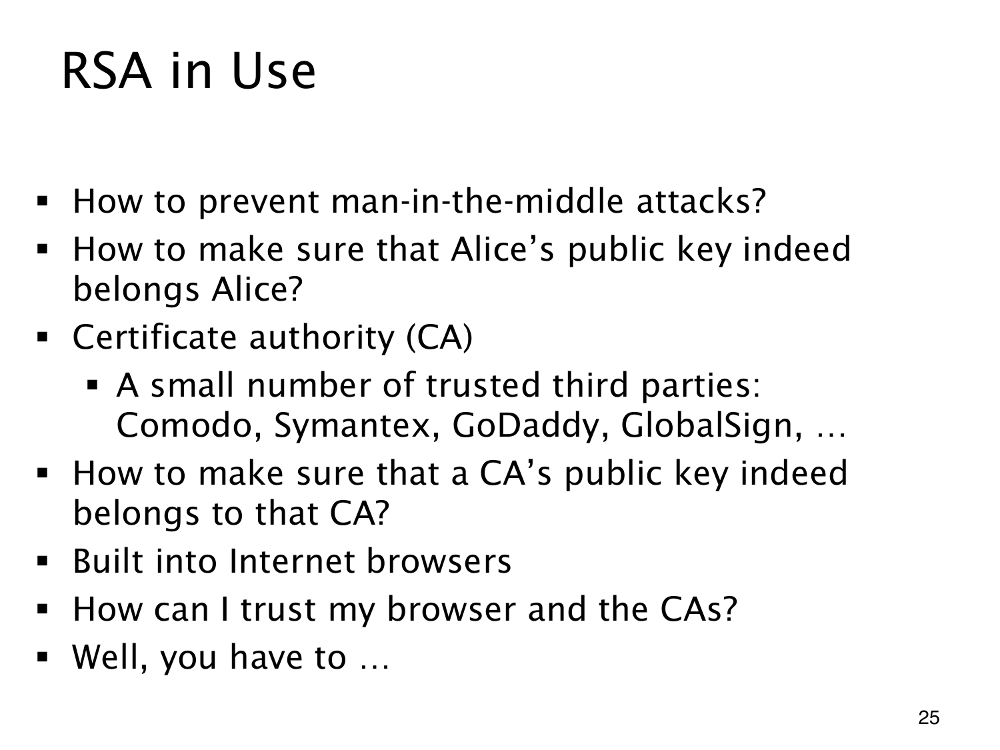

L1.14 · 第 25 页讲解原文
查看这一页课件

证书链要有一个信任起点
数学签名正确，不代表拿到的公钥就属于 Alice。若公钥实际来自冒充者，仍可能发生中间人攻击。
certificate authority（CA，证书颁发机构）对身份与公钥的绑定作签名证明。验证者既要检查签名，也要确认其中的身份与当前通信对象相符。
CA 的公钥同样需要可信依据。课件用浏览器内置的信任根说明：证书链最后必须落到预先信任的公钥或其他信任来源，否则不断另找一把公钥背书，只会无限追问。页上公司名称是当时的例子，不是当前浏览器信任库清单或服务推荐。
末句的幽默落在这个边界上：完全没有信任起点，密码学无法凭空证明整个软件环境可信。系统须明确并保护这些起点，公钥机制才在这些假设下扩展可验证的身份关系。